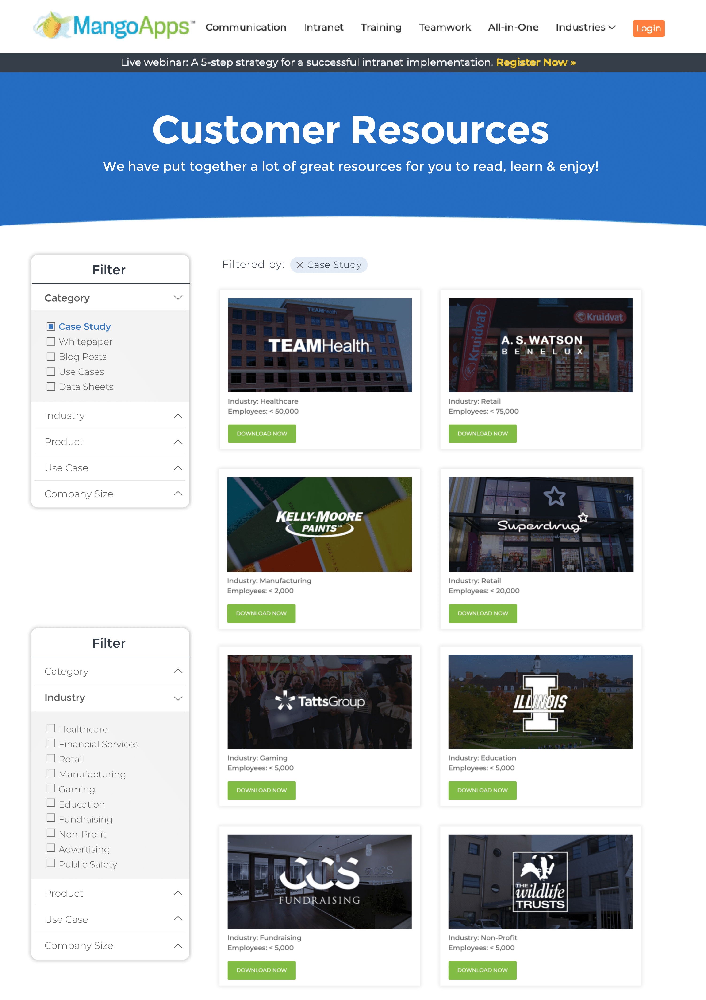

For my final project of Summer 2021, I was given the opportunity to re-design and implement a customer resources page for the MangoApps website. The new resources page would be available for customers to search through marketing content such as case studies, whitepapers, and blog posts.
Before I started the project, all of the resources were scattered around the site with no easy way for customers to find a resource that applied to their company and needs. My goal was to combine all of the resources into a single page, where customers could use filters to find specific resources.
My first step was to fully understand what type of resources MangoApps currently had. I created a spreadsheet of every resource and found that there were three main types: case studies, whitepapers, and blog posts. I then went in and added some more information about each resource, such as the MangoApps product it was about and customer use cases that it discussed, to have a better understanding of what each resource was about and why customers may want to read it. This holistic approach allowed me to have a better understanding of the problem, and ultimately create a better solution.
Next, I started to make wireframes for the website design and functionality. Specifically, I needed to decide how customers were going to find the resources that applied to them. After extensive research I decided to implement filters -- it allowed customers to choose exactly what resources they saw while still being fairly easy to implement and maintain.
My final step in the design process was to make full mockups for the resources page. You can see one of my final mockups below:
After the mockups were finalized, I started to create a prototype for the website. I used HTML, CSS, and JS for the basic page functionality. I used SQLite to create a database of MangoApps resources and Node.js to connect the database to the page.
Overall, I really enjoyed this project. It was very cool to be able to apply the design and programming skills that I learned in class on a real project.
As soon as it is ready for production, you can view the finalized page here.